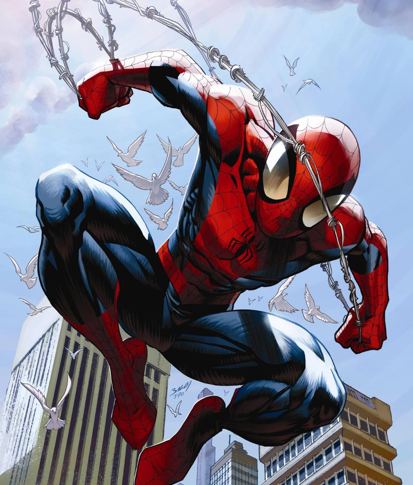
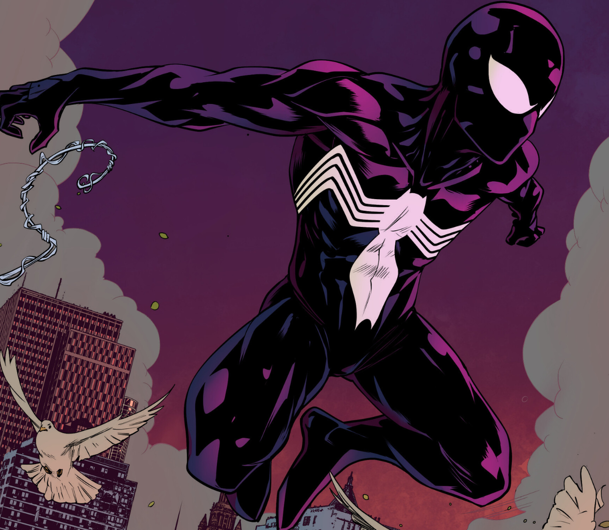
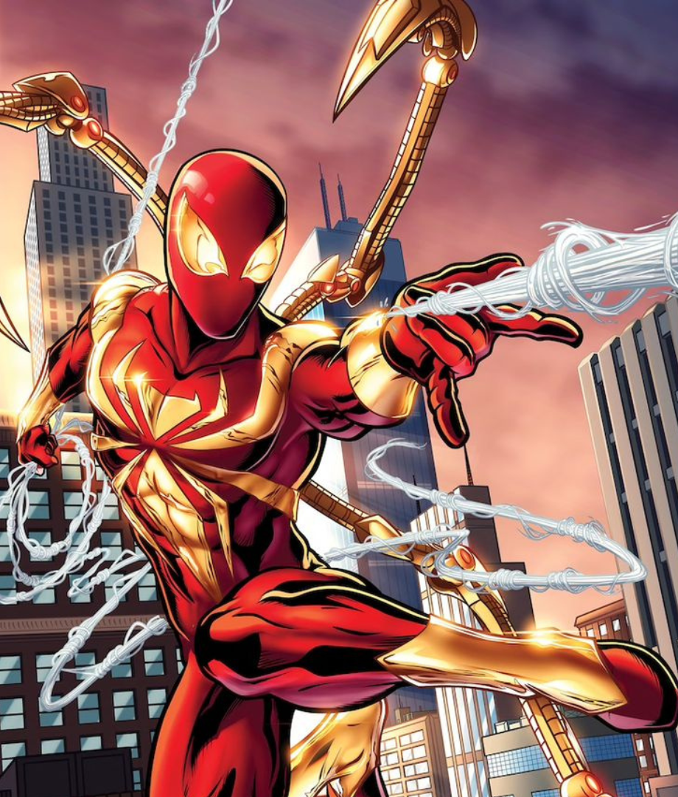

Trajes / Versiones

Traje clasico
El original traje de los comienzos de la historia, el que el mismo Peter Parker creo en su habitacion.

Traje negro
Es el traje que el simbionte Venom le da a spiderman cuando se adhiere a el, haciendolo mas agresivo y aumentando un poco todas sus características.

Iron Spider
un traje mega avanzado que Tony Stark construye para peter, cuenta con 4 brazos mecanicos retraibles que ayudan en combate y movilidad.